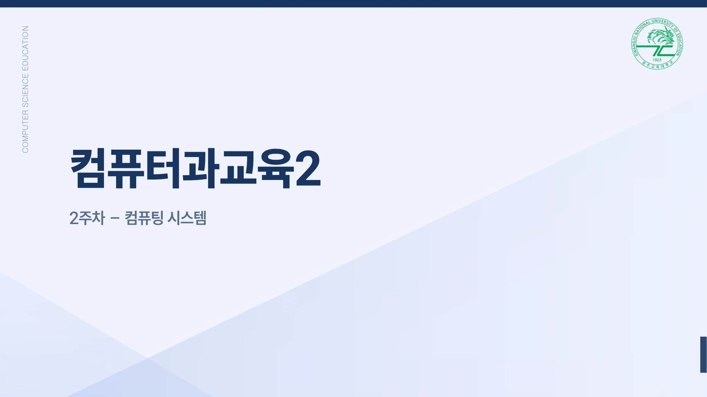

전인성
홈
소개
화면 테마
☰
강의자료
›
컴퓨터과교육2
2. 컴퓨팅 시스템
전체 강의 보기

동영상 보기 ↓
불러오는 중
← 이전
페이지
/
41
다음 →
목차 검색
본문 보기
직접 체험
확대
전체 화면
인쇄
← → 키로 이동, 모바일에서는 좌우로 밀기, 페이지 숫자로 바로 이동
← 강의 목록
3. 데이터의 이해와 표현방법 →
목차 검색
닫기
제목 또는 본문으로 찾기
슬라이드 이동과 체험에는 자바스크립트가 필요합니다.